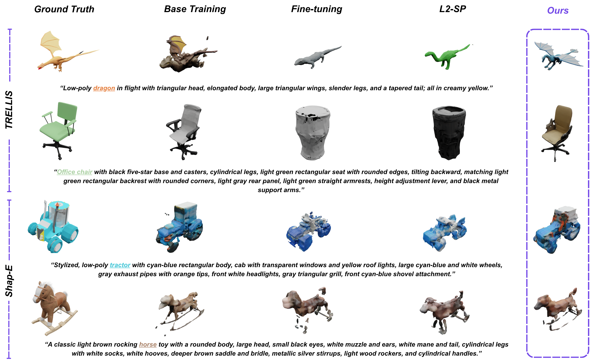

Abstract
Continual learning enables models to acquire new knowledge over time while retaining previously learned capabilities. However, its application to text-to-3D generation remains unexplored. We present ReConText3D, the first framework for continual text-to-3D generation. We first demonstrate that existing text-to-3D models suffer from catastrophic forgetting under incremental training. ReConText3D enables generative models to incrementally learn new 3D categories from textual descriptions while preserving the ability to synthesize previously seen assets. Our method constructs a compact and diverse replay memory through text-embedding k-Center selection, allowing representative rehearsal of prior knowledge without modifying the underlying architecture. To systematically evaluate continual text-to-3D learning, we introduce Toys4K-CL, a benchmark derived from the Toys4K dataset that provides balanced and semantically diverse class-incremental splits. Extensive experiments on the Toys4K-CL benchmark show that ReConText3D consistently outperforms all baselines across different generative backbones, maintaining high-quality generation for both old and new classes. To the best of our knowledge, this work establishes the first continual learning framework and benchmark for text-to-3D generation, opening a new direction for incremental 3D generative modeling.
Method
ReConText3D addresses continual text-to-3D generation using a replay-based learning strategy designed to preserve previously learned generative capability while adapting to novel categories. Instead of modifying the underlying generative backbone, the method constructs a compact and diverse replay memory from prior data using text-embedding k-Center selection. During incremental training, representative replay samples are revisited to reduce catastrophic forgetting and maintain generation quality on earlier categories.

Experimental Results
We evaluate ReConText3D on Toys4K-CL, a benchmark specifically designed for class-incremental text-to-3D generation. Across multiple text-to-3D backbones, our replay-based strategy consistently improves retention of previously learned categories while remaining competitive on newly introduced ones. The results demonstrate a stronger balance between plasticity and stability compared to standard fine-tuning and continual learning baselines.


BibTeX
@InProceedings{Khan_2026_CVPR,
author = {Khan, Muhammad Ahmed Ullah and Bin Amir, Muhammad Haris and Stricker, Didier and Afzal, Muhammad Zeshan},
title = {ReConText3D: Replay-based Continual Text-to-3D Generation},
booktitle = {Proceedings of the IEEE/CVF Conference on Computer Vision and Pattern Recognition (CVPR) Findings},
month = {June},
year = {2026},
pages = {7893-7902}
}